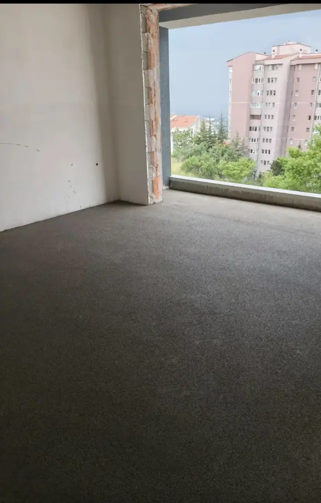

Dulkadiroğlu Şapçı: Makineli Şap Atma
Dulkadiroğlu merkezinde ve 105 mahallesinde makineli şap atıyoruz. Fiyatı metrekare üzerinden veriyoruz; arayın ya da WhatsApp'tan metrekareyi yazın.
Şap işçiliği
70–100 TL/m²
Kum ve çimento sizden, makine ve ekip bizden.
Malzemeli + faturalı
300–350 TL/m²
Kum, çimento, işçilik ve fatura dahil anahtar teslim.
Fiyatlar Ekim 2026 itibarıyla. Kesin rakam metrekare ve iş koşullarına göre verilir.
Dulkadiroğlu'nda şap işleri
Dulkadiroğlu, merkezin doğu ve güney yakası. Burada yeni yapılan binaların yanında depremde hasar alıp güçlendirilen, iç tadilata giren daire ve dükkanlar da çok. Şap işi bazen boş bir betonarme katta, bazen eski zemini sökülmüş bir dükkanda başlıyor.
Tadilat işlerinde önce eski zeminin durumuna bakıyoruz: kırılan, kabaran ya da kot farkı olan yerler varsa şaptan önce söylüyoruz. Eski zeminin üstüne körlemesine şap dökmüyoruz.

Dulkadiroğlu'nda şapta dikkat ettiklerimiz
Merkezde yazlar sıcak geçiyor; şapın ilk günlerde sulanması ve gölgelenmesi gerekiyor. Kışın camı takılı, kapalı binalarda çalışıyoruz.
- Dükkan ve iş yerlerinde zemin vitrin ve kapı kotuna göre ayarlanır; dışarıdan su girmeyecek eğimi baştan alırız.
- Tadilatta tesisat ve elektrik boruları şaptan ÖNCE yerine oturmalı; sonradan kırmak hem işi hem zemini bozar.
- Eski şapın üstüne ince katman gerekiyorsa aderans (yapışma) için yüzey hazırlığını ayrıca yapıyoruz.
Dulkadiroğlu mahalleleri
Dulkadiroğlu ilçesinde aşağıdaki 105 mahallenin hepsine geliyoruz. Mahallenizi yazmanız yeterli.
- Abbaslar
- Aksu
- Akyar
- Alibeyuşağı
- Arslanbey Çiftliği
- Aslan Bey
- Ayaklıcaoluk
- Ağabeyli
- Bahçeli
- Bahçeli Evler
- Ballıca
- Bayazıtlı
- Baydemirli
- Bağlarbaşı
- Başdevrişli
- Beşenli
- Boyalı
- Budaklı
- Bulanık
- Demirciler
- Denizli
- Dereköy
- Dereli
- Divanlı
- Doğanlıkarahasan
- Doğu Kent
- Dulkadiroğlu
- Duraklı
- Egemenlik
- Ekberoğlu
- Ekmekçi
- Elmalar
- Erkenez
- Eskinarlı
- Eyüp Sultan
- Fevzi Paşa
- Gaffarlı
- Gazi Paşa
- Genç Osman
- Göllü
- Gültepe
- Güneşevler
- Güzelyurt
- Hacıeyüplü
- Halkaçayırı
- İsa Divanlı
- İsmet Paşa
- İstasyon
- Kabasakal
- Kanuni
- Kapıçam
- Karacasu Ferhuş
- Karacasu Karaziyaret
- Karacasu Karşıyaka
- Karacasu Kırım
- Karacasu Mamaraş
- Karamanlı
- Karataş
- Kartal
- Kayabaşı
- Kazanlıpınar
- Kemallı
- Kocolar
- Kozludere
- Kurtuluş
- Kuzucak
- Küpelikız
- Küçüknacar
- Kılağlı
- Maksutuşağı
- Mehmet Akif
- Menderes
- Namık Kemal
- Navruzlu
- Osmanbey
- Peynirdere
- Pınarbaşı
- Sakarya
- Sarıkaya
- Senem Ayşe
- Seyrantepe
- Sivricehüyük
- Söğütlü
- Sümer
- Sütçü Imam
- Tevekkelli
- Turan
- Ulutaş
- Yahya Kemal
- Yavuz Selim
- Yeni Şehir
- Yenikent
- Yenipınar
- Yeniyurt
- Yeşiltepe
- Yusufhacılı
- Çatmayayla
- Çiğli
- Çobanlı
- Çokyaşar
- Çınarlı
- Öksüzlü
- Şerefoğlu
- Şeyh Adil
- Şeyh Şamil
Dulkadiroğlu şap işlerinden fotoğraflar
Sık sorulan sorular
Eski zemini sökülen dairede şap atılır mı?
Atılır. Önce kalan zeminin sağlamlığına ve kot farkına bakıyoruz; gevşek kısımlar alınıp temizlendikten sonra şap atılır.
Dükkan zemini için şap uygun mu?
Seramik, parke ya da epoksi altına şap uygun bir alt zemindir. Üst kaplamayı söylerseniz kalınlığı ona göre ayarlarız.
Dulkadiroğlu'nda şap fiyatı ne kadar?
Ekim 2026 itibarıyla işçilik 70–100 TL/m², malzemeli ve faturalı 300–350 TL/m².
Yakın ilçeler
Dulkadiroğlu'nda şap için fiyat alın
Arayın ya da WhatsApp'tan yazın: ilçe, metrekare ve şapın atılacağı kat yeterli.